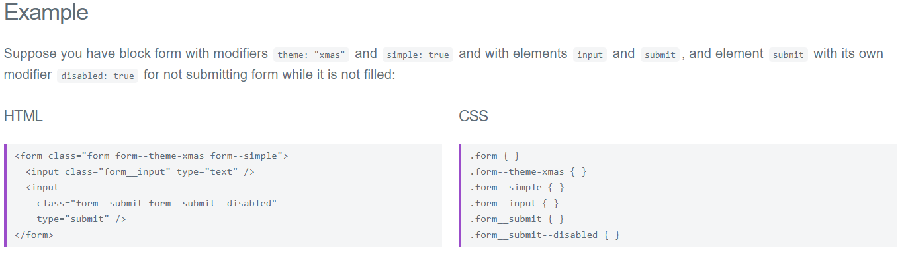
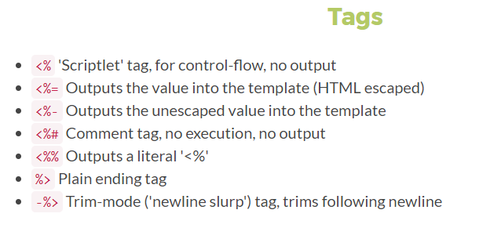

Notes on DEV
Sources - Regular reads
How it started - Beginner's advice
BEM
On smaller brochure sites, how you organize your styles isn’t usually a big concern. You get in there, write some CSS, or maybe even some SASS. You compile it all into a single stylesheet with SASS’s production settings, and then you aggregate it to get all the stylesheets from modules into a nice tidy package.
However, when it comes to larger, more complex projects, how you organize your code is the key to efficiency in at least these three ways: it affects how long it takes you to write code, how much of that code you’ll have to write and how much loading your browser will have to do. This becomes especially important when you’re working with teams of themers, and when high performance is essential.
There are plenty of methodologies out there aiming to reduce the CSS footprint, organize cooperation among programmers and maintain large CSS codebases.
No matter what methodology you choose to use in your projects, you will benefit from the advantages of more structured CSS and UI. Some styles are less strict and more flexible, while others are easier to understand and adapt in a team.
Benefits
Modularity: Block styles are never dependent on other elements on a page, so you will never experience problems from cascading.
Reusability: You also get the ability to transfer blocks from your finished projects to new ones.
Composing independent blocks in different ways, and reusing them intelligently, reduces the amount of CSS code that you will have to maintain.
With a set of style guidelines in place, you can build a library of blocks, making your CSS super effective.
Structure: BEM methodology gives your CSS code a solid structure that remains simple and easy to understand.
Naming
Element two underscore, and modifier: two dashes
Chrome Dev Tools
notes to add here
jQuery
More than just an API to work with the DOM.
jQuery is a JavaScript library that makes it easy to add dynamic behavior to HTML elements.
jQuery is case sensitive
$ is the same as jQuery, so $ is a shortcut, so it tells we're accessing the Jquery library jQuery works in set: use a selector (# or . in quotes) and than changes things.
CSS: pseudo class reflect a specific state of an element: :hover :first-child ....
jQuery.com library to makes the most of Javascript functions, lots of plugging for interactive webapps - it's a layer above javascript mostly used to manipulate the DOM (Document Object Model) easily. We can select / modify elements, attach event handlers and work with form.
When downloading JQuery, make sure it's the minified version (production one and not the development one) to avoid long uploading time for your page. to add in the html: <script type="text/javascript" src="http://code.jquery.com/jquery-latest.min.js"></script> or if you have downloaded the file: <script type="text/javascript" src="jquery.js"></script>to select an element in the document: $(document).ready(function() { blabla;});
$('#name of div).property etc...
$('.name of class). etc....
regex, get , animation, fade etc..
jqueryui.com for widgets (just call like above):
<script type="text/javascript" src="http://ajax.googleapis.com/ajax/libs/jqueryui/1.10.4/jquery-ui.min.js""></script>
draggables, reziable, droppable, accordion (each div fold) and sortables (to move elements on screen).
jQuery component, web app on the client side
jQuery UI is above and deals with: effects, widgets, themes, date pickers, menu, progress bars, plugins...
above: customs libraries
JavaScript - Guidelines
notes to add here
Templating languages for JS
Differences between HandlebarsJS and Mustache
http://mustache.github.io/mustache.5.html
EJS - Effective JavaScript Templating
EJS

notes to add here
Unit Testing
notes to add here
Miscellanous
CSFR
Head tag
hidden
Form variables. These fields should not be rendered and provide a means for servers to store state information with a form. This will be passed back to the server when the form is submitted, using the name/value pair defined by the corresponding attributes. This is a work around for the statelessness of HTTP. Another approach is to use HTTP "Cookies".
<input type=hidden name=customerid value="c2415-345-8563">
HTML infographic

JSON
Placeholder
Using the placeholder attribute
The placeholder attribute:
- can’t be automatically translated
- is often used in place of a label, locking out assistive technology
- can hide important information when content is entered
- can be too light-colored to be legible
- has limited styling options
- may look like pre-filled information and be skipped over
Solution: Move the placeholder content above the input, but below the label
SAML - Security Assertion Markup Language
It's an open standard for exchanging authentication and authorization data between parties, in particular, between an identity provider and a service provider. Beyond what its name suggests, SAML is each of the following:
- an XML-based markup language (for assertions etc.)
- a set of XML-based protocol messages
- a set of protocol message bindings
- a set of profiles (utilizing all of the above)
- the single most important use case that SAML addresses is web browser single sign-on (SSO). Single sign-on is relatively easy to accomplish within a security domain (using cookies, for example) but extending SSO across security domains is more difficult and resulted in the proliferation of non-interoperable proprietary technologies. Hence the SAML Web Browser SSO profile was specified and standardized. (For comparison, the more recent OpenID Connect protocol[2] is an alternative approach to browser SSO.)
View vs redirect
In the same controller just content then view. Redirect URL to the controller which will do the work.
When you return a view you are responding to a uri. For example, when someone access the /about uri you respond by returning a view.
A redirect is actually changing the uri which means you actually invoke another controller's method. The norm is to return a View when you use a GET request and to Redirect somewhere after you've sent a POST request.
Z-index
A non-positioned element is an element with the default position value static. A positioned element is an element with any other position value. Examples of other values are: absolute, relative, sticky or fixed.
Z-index only works with positioned elements.
Adding a z-index value to an element forms what is called a stacking context.
An element with a z-index value other than auto forms a new stacking context. And it affects how its child elements are being displayed.
It is possible to change the stacking order of child elements. However, their z-index only has a meaning within that stacking context.
There are several other properties that cause elements to form stacking contexts. Some examples are: filter, opacity, and transform.